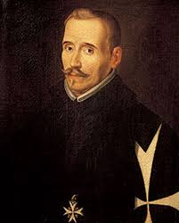

Autor
- Introducción
- Biografía
I. Introducción
Fernando de Rojas es un escritor español conocido por ser el autor de La Celestina, la cual es considerada una de las obras cumbre de la literatura española y la más importante sin duda en la transición entre la Edad Media y el Renacimiento.
II. Biografía
Fernando de Rojas nació entre 1473 y 1476 en La Puebla de Montalbán (Toledo). Procedía de una familia acomodada de judíos conversos de cuatro generaciones que fue perseguida por la Inquisición. Estudió derecho en la Universidad de Salamanca y como todos lo estudiantes salmantinos de aquella época, debió de cursar tres años obligatorios en la Facultad de Artes, por lo que seguramente conoció los clásicos latinos y la filosofía griega. En posesión del título de Bachiller en Leyes, para el que tuvo que estudiar nueve o diez años, comenzó a ejercer como abogado en Talavera, de donde llegó a ser alcalde en 1538. En 1507, por un altercado fiscal con un vecino, se traslada a Talavera de la Reina, donde ejerce su profesión hasta el final de sus días. Contrajo matrimonio con Leonor Álvarez de Montalbán, hija, igualmente, de conversos. De ella tuvo siete hijos, el primogénito continuó la carrera de su padre. En 1525 fracasó al intentar representar a su suegro en un proceso inquisitorial, debido a su condición de converso. Murió en el año 1541 sin hacer la menor alusión a su obra, que pronto se conoció como La Celestina. Se discute que su situación haya sido la que se suele esperar en un converso, es decir, la de alguien acosado por una sociedad cruel. Su testamento refleja el estado de un hombre respetado y dotado de un considerable patrimonio.
A. Vídeo